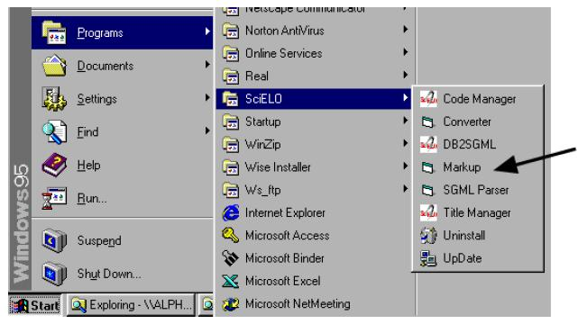
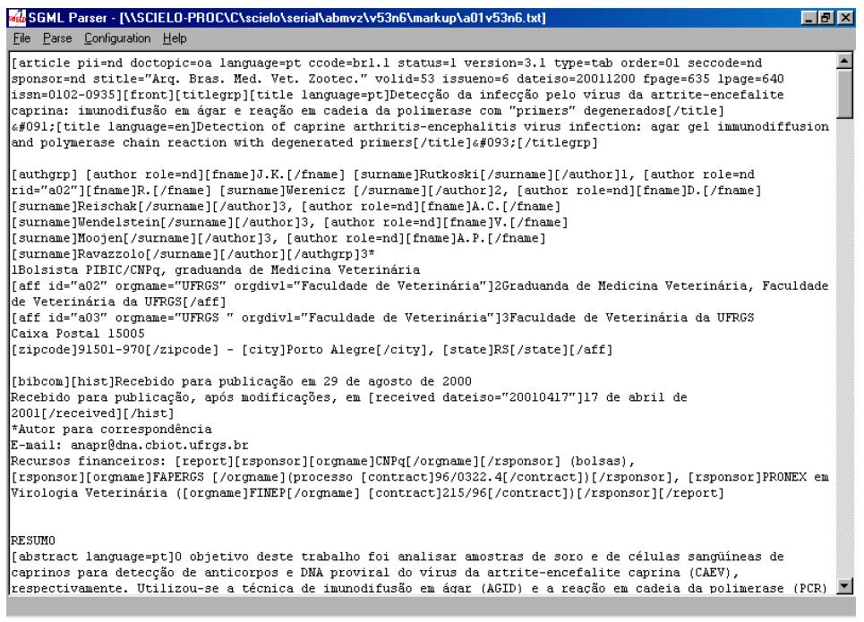
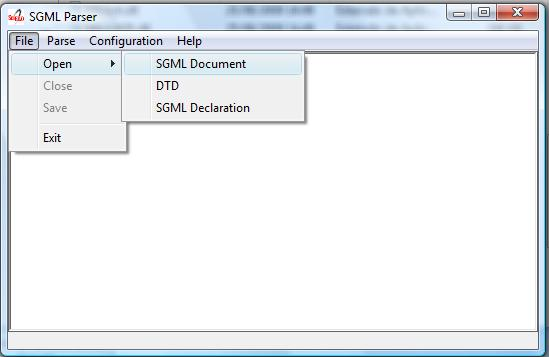
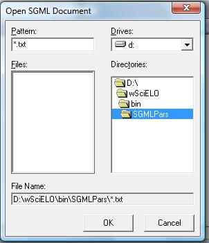
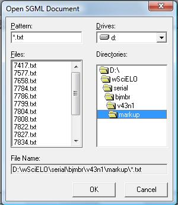
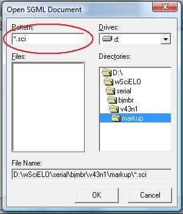
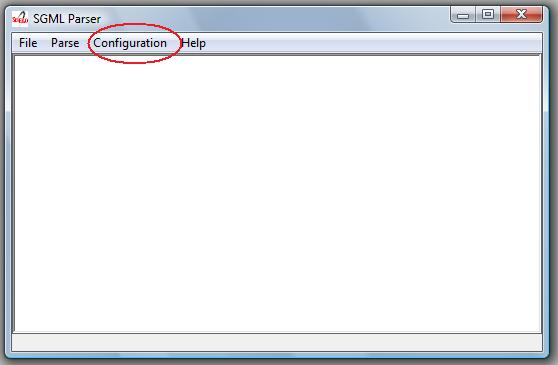
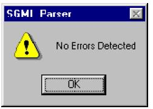
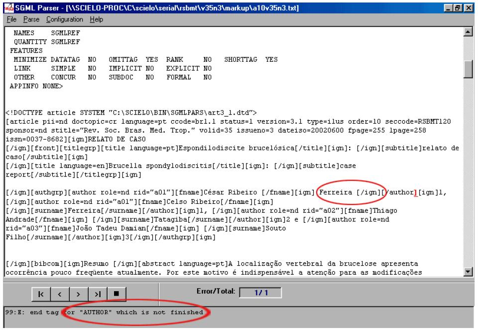

SGML Parser¶
- single-user program built in Visual Basic and C, and uses sp120.dll library.
- It is always installed, because it is used in several situations: by the Markup, by the Converter (internally), and stand-alone.
- tool to check whether the markup done using [wiki:en_SciELO_PCPrograms_Markup Markup] is according to [wiki:en_SciELO_DTD DTD SciELO].
This program can be run: - or from Markup <markup.rst>

or by PC Programs menu
or by Converter, internal use, to analyze and obtain the values of the elements and their attributes.
Parser called by Markup: the file, which is open in the Markup program, is open in SGML Parser program.

Parser called by Menu: after opening SGML Parser program, the user have to open a file .txt or .sci, by accessing the ‘’File’’ menu option.
  
This procedure must be done to *.sci files generated by Converter when some problem is identified in the marked files.

Configuration¶
Access the Menu and select Configuration option.

- The options “Add ignore markup to document” and “Add SGML declaration to document” must be selected, when the document is:
- an article
- “File Containing the DTD” = C:SCIELOBINSGMLPARSarticle4_0.dtd
- “Document Type Name” = article
- a text
- “File Containing the DTD” = C:SCIELOBINSGMLPARStext4_0.dtd
- “Document Type Name” = text
Document analysis¶
After configuring, the user have to use ‘’‘Parse’‘’ menu option in order to analyze the marked document.
If everything is correct, the message bellow is presented:

So, the user can exit the program.
If there are errors, the Parser will indicate the line and the error type occured. In this case, the user must go back to Markup program and make corrections and then repete the procedure of using SGML Parser, until there is no error.
